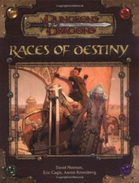

“Races of Destiny” on the
Shelf of Many Books

Races of Destiny
D&D 3.5
(3e)
Year
: 2004
Races of Destiny
on Amazon
Races of Destiny
on TSR Info
Known monsters from the book:
Aasimar
Doppelganger
Half-Ogre
Illumian
Mongrelfolk
Sea Kin
Sharakim
Skulk
Tiefling
Underfolk